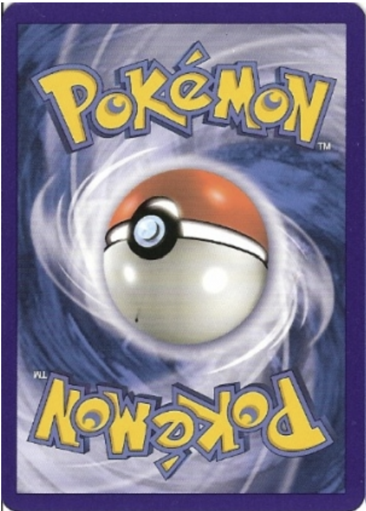
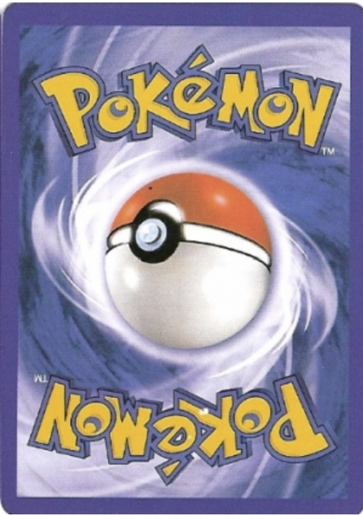
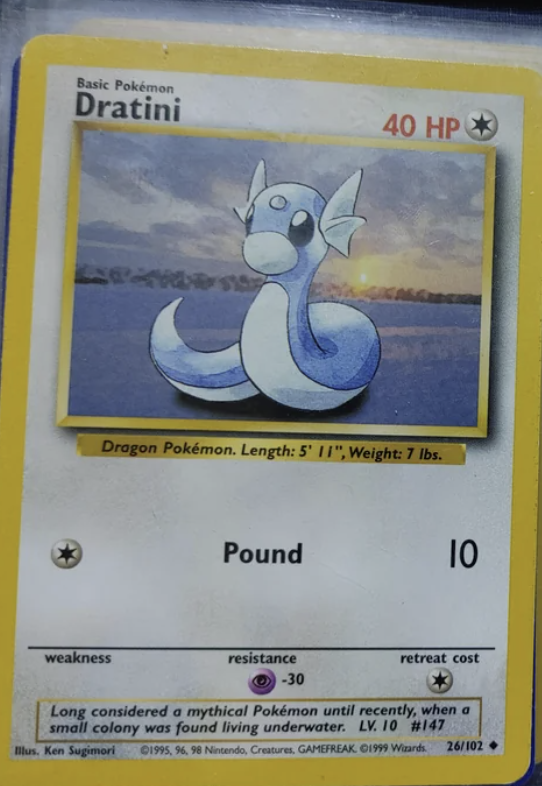
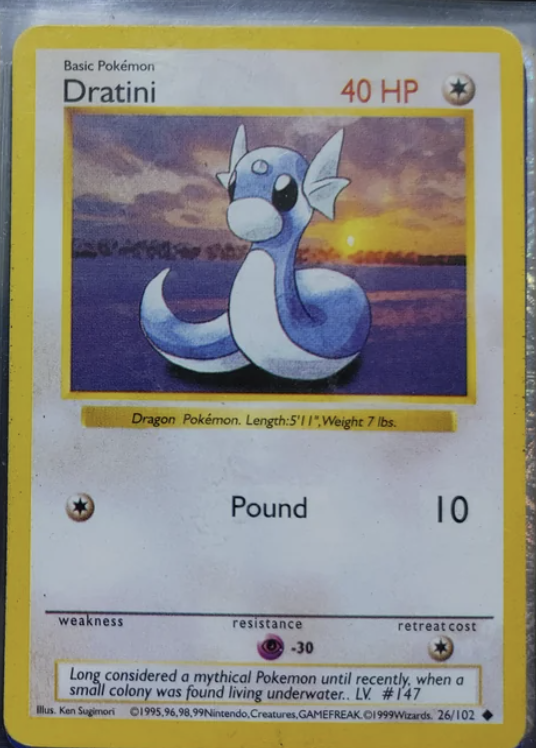

Is Your Card Real or Fake?
Compare real vs. fake characteristics side-by-side to ensure your collection is authentic.
Genuine Card

Dynamic Holo Foil: The background shines and the star patterns actively move when tilted.
Sharp Coloring: The overall color printing is very sharp, vibrant, and highly detailed.
Energy Symbols: Energy symbols are perfectly sized and sharply printed.
Card Back: Features the rich, complex multi-toned blue backing of an authentic card.
Counterfeit Card

Printed "Holo": The star pattern is photocopied directly onto the card. It does not shine, move, or reflect light.
Faded Coloring: The print quality looks washed out, faded, or blurry compared to the real card.
Bloated Symbols: Energy symbols look bloated, distorted, or slightly off-center.
Fake Card Back: The back coloring is typically washed-out, purplish, or completely inaccurate.
Card Back Comparison
Genuine Card Back

Natural Print Variations: There are natural differences in card backs from one official print run to another. Pokémon USA tries to keep the coloring consistent, but some variation is completely normal.
Key Differences: The key differences you can rely on are perfectly crisp details, such as the sharpness of the blue swirls and the yellow border.
Counterfeit Card Back

Color Difference: The most obvious thing you may notice is the color (one is often paler). However, this is not a reliable indicator to look for alone due to natural print variations.
Lack of Reference: You probably wouldn't have a real Pokémon card handy to compare with the suspected fake if you're in a retail store.
Font Comparison
Genuine Font

Crisp Typography: The official Pokémon font is meticulously designed to be clean, sharp, and perfectly legible.
Accurate Details: Notice the proper single period at the end of the sentence, and the correct inclusion of "LV. 10".
Counterfeit Font

Wrong Font Family: Scammers often struggle to replicate the proprietary font, resulting in text that looks slightly too generic or overly thin.
Blatant Typos: Here, they added a double period ("underwater.."), and completely forgot the "10" after "LV.".